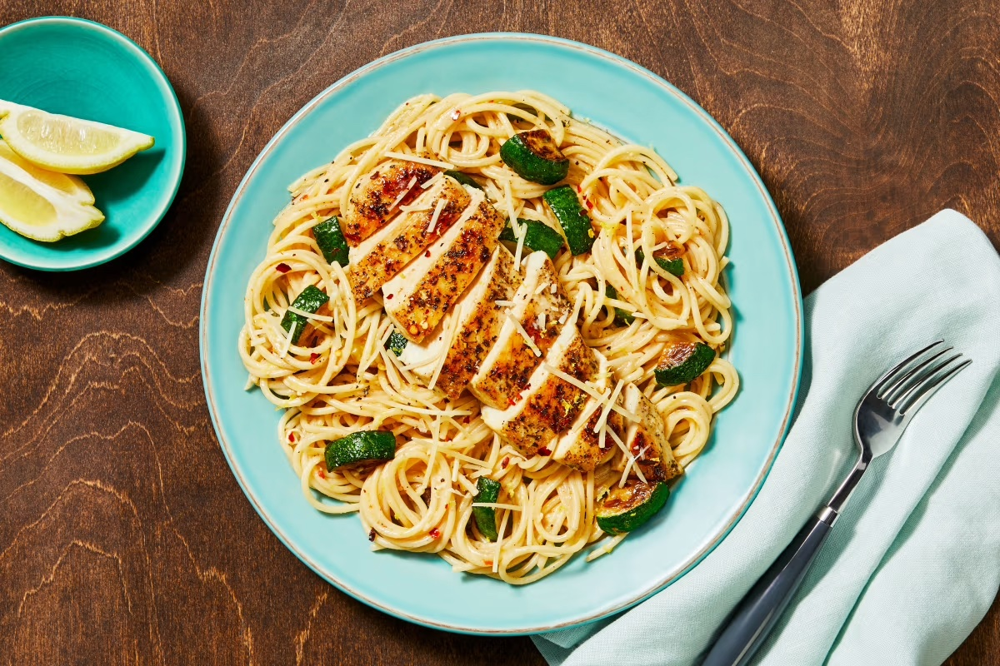

Lemon Chicken Sghetti

Getchu Some of that Tasty Sghetti and Butter!
Sghetti, butter, and lemons. What more do you need?
Ingredients
- 10 oz chicken cutlets
- 6 oz spaghetti
- 1 zucchini
- 1 garlic clove
- 1 lemon
- 1 tbsp italian seasoning
- 1 tsp chili flakes
- Chicken stock concentrate
- 2 tbsp sour cream
- 1/4 cup parmesan cheese
- 2 tsp olive oil
- 2 tsp cooking oil
- 1 tbsp butter
- salt and pepper
Steps
- Bring a large pot of salted water to a boil
- Wash and dry produce
- Trim and quarter zucchini lengthwise; cut crosswise into 1/2 inch thick pieces
- Peel and mince garlic
- Zest and quarter lemon
- Once water is boiling, add spaghetti to pot, stirring occasionally, until al dente, for 9-11 minutes
- Reserve 1 cup pasta cooking water, then drain
- While pasta cooks, heat a drizzle of olive oil in a large pan over medium-high heat.
- Add zucchini; cook, stirring occasionally, until browned and softened, for 4-6 minutes
- Season zucchini with salt and pepper
- Turn off heat, transfer zucchini to a plate. Wipe out the pan
- While zucchini is cooking, pat chicken ddry and season all over with italian seasoning, salt, and pepper
- Heat large drizzle of olive oil in wiped pan over medium-high heat
- Add chicken and cook until browned and cooked through, 3-5 minutes per side
- Turn off heat and transfer to a cutting board to rest
- Once cool enough to handle, slice chicken crosswise
- Heat drizzle of olive oil in the pot used for spaghetti over medium-high heat
- Add garlic, half the lemon zest, and a pinch of chili flakes. Cook, stirring, until fragrant, 20-30 seconds
- Stir in 1/2 cup reserved pasta cooking water, stock concentrate, and juice from two lemon wedges
- Simmer until thickened, 1-2 minutes
- Turn off heat
- Add drained spaghetti, zucchini, sour cream, and 1 tbsp of butter to pot with sauce. Toss to coat
- Add half of the parmesan and season with salt and pepper
- Divide pasta between bowls
- Top with chicken, remaining parmesan, remaining lemon zest, and a pinch of chili flakes if desired
- Serve with any remaining lemon wedges on the side